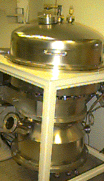
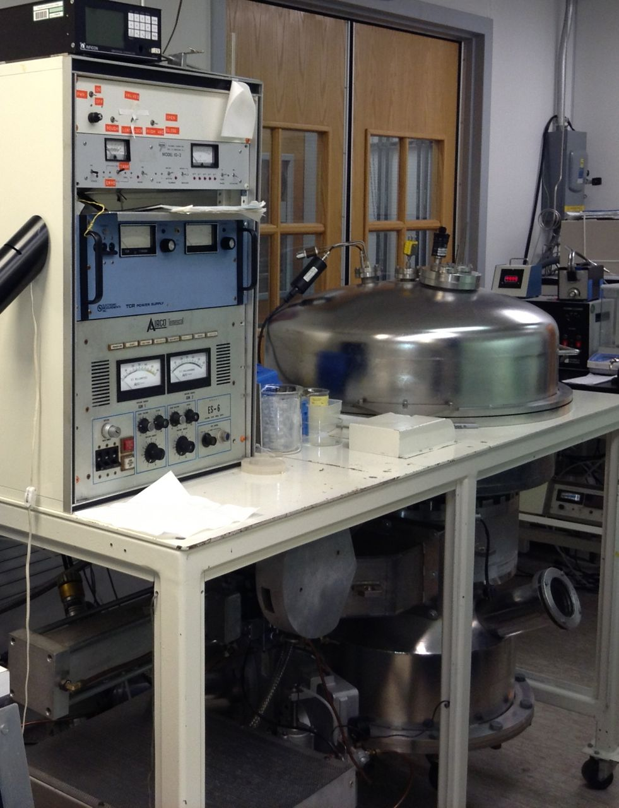

Electron beam evaporation system for depositing thin films
of metals.
<p>
<ul>
<li><a href="ebeam1/ebeam1.html">Instructions for Microengineering Lab
ebeam evaporation system</a>.  Note:  the sloan
PAC8 has been replaced with an ES-6 variable voltage unit; lower voltage provides superior performance with some insulators.
<li>
Related archive: The alternative Wilder hall <a href="wilder.html">ebeam2</a> deposition system is no longer available, but we have an additional thermal evaporator and two sputtering systems.
</ul>
<br clear=both>
<hr> <p>
<a href="mailto:Christopher.G.Levey@dartmouth.edu"><ADDRESS>Christopher.G.Levey@
dartmouth.edu</ADDRESS></a>
</body></html>
